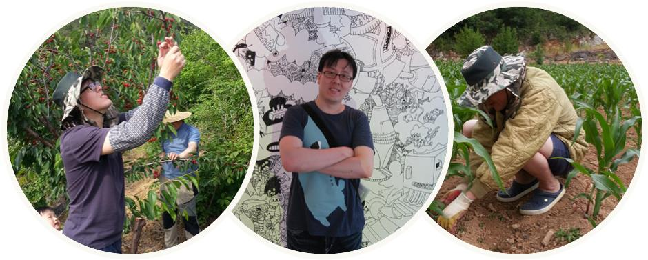

팝업팜 @RiskWork는 라이프케어 토피어리를 디자인합니다.
디자인 콘셉트는 "반려식물과 함께하는 커뮤니티 기반 라이프케어" 입니다.
연락처: snowfall.hamn@gmail.com
| 2003-2006 | 미디어·광고·마케팅 기획 |
| 2008-2010 | 英, Corporate Risk MGT. 전공 |
| 2009-2010 | 이머징 리스크의 예후 탐지 방법 연구 |
| 2011-2016 | IT분야 프로젝트 기획 및 PM |
| 2012-現 | IRM, Technical Specialist |
| 2017.05 | 데이터 분석 기반 위크시그널 탐지 방법 특허 등록 |
| 2017.11 | 리스크워크 창업 |
| '스타트업 프로젝트 리스크 컨설팅 & 농업 디자인·콘텐츠 연구' |
